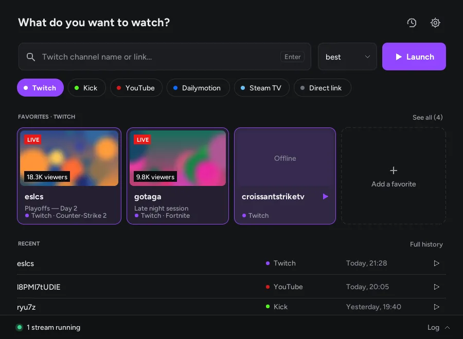
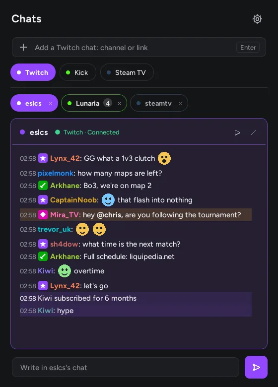
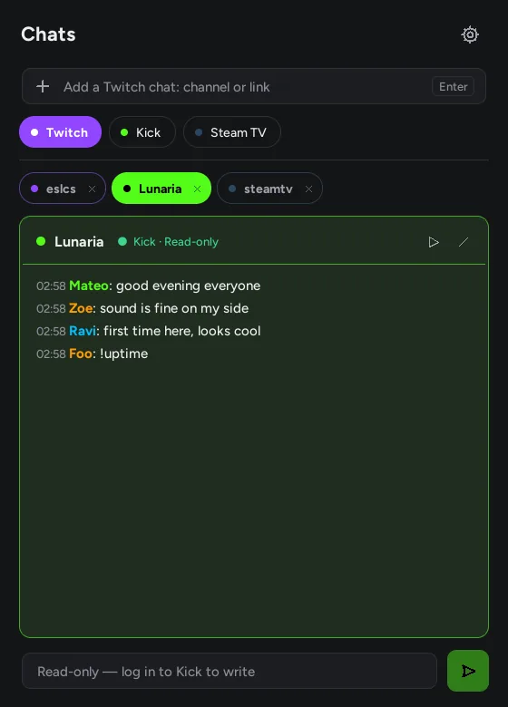
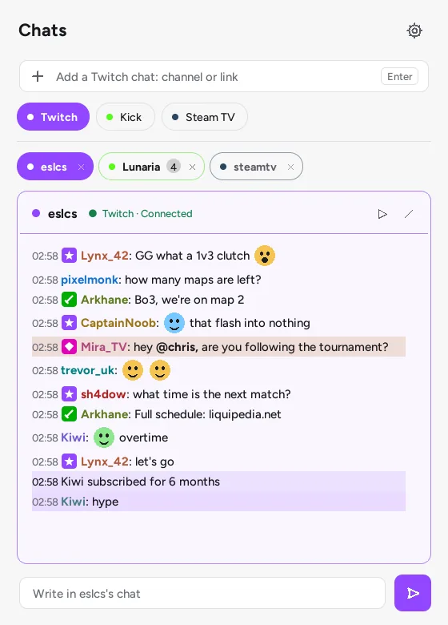

Launcher
v1.5.1 · Windows 10/11 · Linux x86_64- Su Linux, rendi eseguibile l'AppImage, poi avviala:
chmod +x StreamlinkLauncher-1.5.1-x86_64.AppImage - Al primo avvio, il launcher trova Streamlink da solo, o ti spiega come installarlo.
Streamlink Launcher apre Twitch, Kick, YouTube, Dailymotion e Steam TV in VLC, mpv o PotPlayer. Streamlink Chat tiene le chat di Twitch, Kick e Steam TV in una finestra accanto. Stesso stile, stessa leggerezza, nessuna dipendenza.
Un'interfaccia leggera per Streamlink, in Python e Tkinter. Ricorda i tuoi preferiti, ti dice chi è in diretta e avvia lo stream senza pubblicità di Twitch, nel lettore che preferisci.

best, 1080p60, audio_only, o un elenco di riserva come 720p60,720p,best..url.platforms.json: aggiungi le tue, con il loro colore.Modalità mini: una barra mobile in stile Spotlight, da qualsiasi applicazione.
Il compagno del launcher, nello spirito di Chatterino. Twitch, Kick e Steam TV in un'unica finestra, ognuna con il colore della sua piattaforma. Per leggere non serve un account.
Passa il mouse sulla chat o scorri verso l'alto: lo scorrimento automatico si mette in pausa, proprio come nell'app. Su Twitch, scrivi un messaggio; Tab completa i nomi.
| Piattaforma | Lettura | Scrittura |
|---|---|---|
| Twitch | Senza account | Dopo l'accesso |
| Kick | Senza account sperimentale | Dopo l'accesso |
| Steam TV | Senza account | Sola lettura |



Nella chat, ▶ avvia lo stream con lo stesso Streamlink del launcher. Nel launcher, i tuoi preferiti ti dicono chi è in diretta.
Gli stessi componenti disegnati, gli stessi colori delle piattaforme, tema chiaro, scuro o automatico che segue Windows.
Ogni app cerca la nuova versione su GitHub, ne verifica dimensione e SHA-256, sostituisce l'eseguibile e si riavvia.
Libere e con licenza MIT. Ti servono Streamlink e un lettore video come VLC o mpv.
chmod +x StreamlinkLauncher-1.5.1-x86_64.AppImagechmod +x StreamlinkChat-0.2.1-x86_64.AppImageOgni release pubblica un file SHA256SUMS.txt per verificare ciò che scarichi. Gli eseguibili di Windows non hanno ancora una firma del codice: se compare SmartScreen, scegli Ulteriori informazioni, poi Esegui comunque.